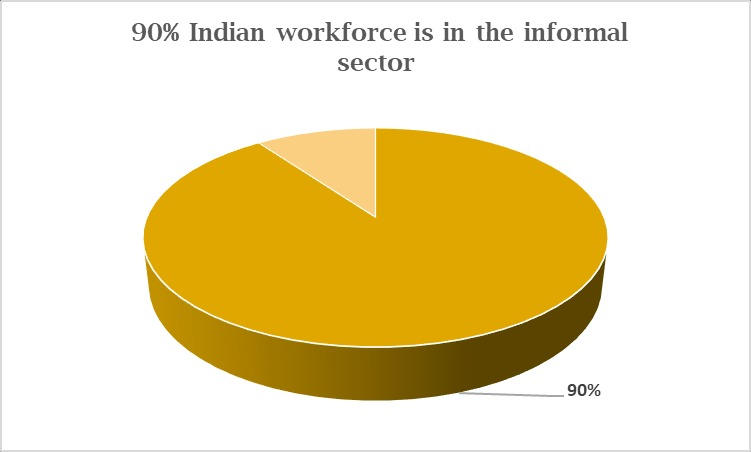
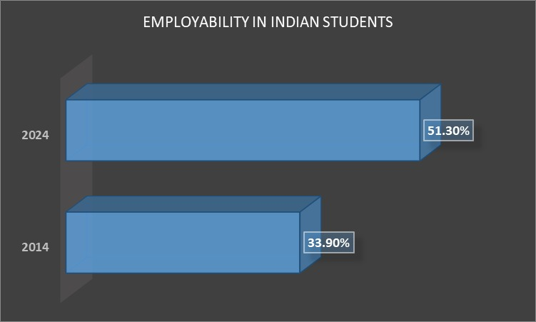
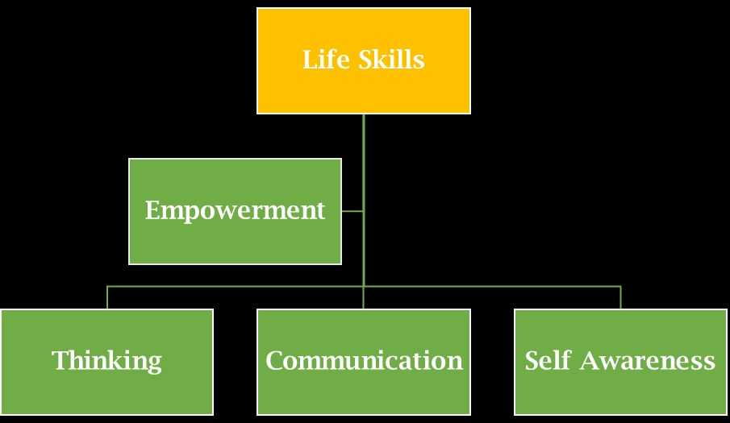
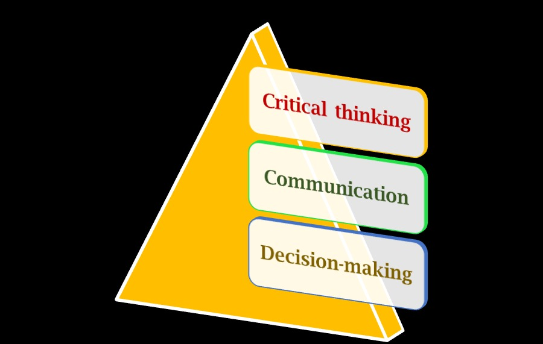

In the rapidly evolving world, life skills are the key to fulfillment and joy!
From quality education to coping strategies, these skills, help us handle the ups and downs of everyday life. And without these functional abilities, we cannot expect anyone to reach the pinnacle of success.
This information will deal with the essential students life skills, and the best ways to build these in students.
Both traditional and online school teachers can benefit from this information. Learn how to incorporate engaging life skills activities for students in your everyday teaching and learning.
Be with us as we begin with some generic information for you.
What are the Examples of Life Skills for Students?
Examples of life skills:
Why Should Stakeholders Focus on Building These Skills?
Experts suggest that life skills for students are a missing link between education and employment. And with 90% of the Indian workforce employed in the informal sector, millions of workers keep migrating to urban centers for employment. To meet the demands of the workplace, and explore the best opportunities, our students need to be equipped with these relevant skills.
In the Indian context, UNICEF defines skills under the following headers:
While all these are interlinked, employability remains the ultimate goal for our Indian students. For decades, our youth has struggled with poor employability rates of 33.9% in 2014, to 51.3% in 2024. And stakeholders trust the power of life skills activities for students to improve these alarming situations.
It’s time to explore some activities to develop life skills for students.
Engaging Ways and Activities to Build Students Life Skills
Role Plays
Role-plays are fun and suit many educational goals. Plan a few of these around some defined characters. And let students enjoy live role-playing with real-life scenarios.
Pick relatable situations like grocery shopping, buying a house, and planning an interior makeover for the new house. Such scenarios will make this activity for life skills highly informational. And you can allocate roles that students can relate to (head of the family, grocery shop owner, FMCG expert in a superstore, etc.) Try open-ended scripts for middle and high school students. But keep it simple for the younger ones.
Hand-made cost-effective props like neck hangings, placards, etc. add great value to a role. Involve your students throughout the process. And teach skills like conflict resolution, budgeting, communication, empathy, etc.
Engaging Cooking Activities
There is nothing more satisfying than cooking scrumptious dishes on your own. It gives students the confidence to make food choices on their own. And this crucial life skill teaches the importance of food ingredients, quantity, heating process, nutrition, balancing agents, etc.
Plan a cooking activity periodically to build students life skills. Add variations like peer reviews, and debates on how healthy food choices can change an individual’s life. If you are teaching in a traditional school, let students exchange their cooked dishes amongst themselves. Similarly, if you plan a cooking activity for kindergarten teach kids about the importance of ‘portion control’ for junk items and the problems related to overconsumption of these. Conclude this activity for life skills with some related jingles. And make the experience joyous for your class.
Thinking from Multiple Perspectives
Life skills for students go beyond the traditional show-and-do methods. It is about helping students to think and decide on their own. This involves qualities like empathy, the ability to think critically along with the readiness to take calculated risks.
Let students imagine various situations and ask them their preferred actions. For instance, they see a family member entering the house with a lot of weight (shopping bags), a road accident, etc. Allow them to weigh the pros and cons of each action, keeping their perspectives, and those of the others in mind. Pick the best ideas and plan a quick role-play activity to make the learning permanent.
Games for Expression and Perseverance
From the classics like hide and seek to board games, freeze dance, Simon Says, chess, etc. several games can be used as life skills activities. Games provide a nonjudgmental environment for students to express themselves. And they learn coping strategies through fun opportunities while playing these games.
It is not an exaggeration to say that games have the potential to convert learning by theory into practice. It is the ultimate solution to hone 21st-century skills. And a NO-FAIL strategy to build crucial life skills for students (such as problem-solving).
In this digitally inclined world, top online schools use game-based strategies (gamification) to enhance learning outcomes. Do visit this page to learn how K8 School uses technology to create an engaging learning environment.
Collaborative Cleaning and Organizing Tasks
If you are looking for a fun and educational activity for kindergarten to elementary levels, this one is good enough. Plan a few fun cleaning tasks with music, give away cleanliness star rewards, and explain the importance of cleanliness in life. Make it more meaningful by dividing students into groups. Let them have time-restricted cleaning tasks. And make sure that each group gets the credit that they deserve.
It’s creative to value-adds like hacks to create cardboard organizers for the study desk (from the everyday online delivery boxes/household items). Make it interactive, and let students share their ideas to incorporate cleaning and organizing into their everyday schedules.
Projects on Budgeting and Finance Management
Managing finance is yet another imperative students life skills. Introduce the concept of spending and earning through projects/assignments/worksheets. Share handouts or virtual copies (like an online school), and let students fill in some examples of managing expenditure against a lump sum figure (imagine a family earning). You can plan such activities and introduce concepts like lending borrowing. And for high schoolers try to introduce investing ideas (for both short-term and long-term duration) to build a foundation for financial literacy.